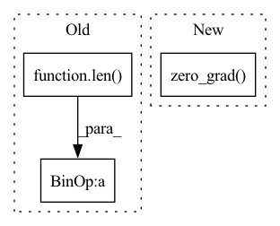

Pattern ID :23779
Before Change
single_psi = [psi_i[idx] for psi_i in psi]
// self._update_k_p_on_datum(psi=single_psi, error=error[idx])
self.K = [self.P[i] @ single_psi[i] for i in range(len(self.params))]
psiPpsi = [single_psi[i].T @ self.K[i] for i in range(len( self.params) )]
c = [1 / (1 + psiPpsi[i]) for i in range(len(self.params))]
self.P = [
self.P[i] - c[i] * (self.K[i] @ self.K[i].T)
for i in range(len(self.params))After Change
self.to_device_transform(torch.eye(self.P[i].shape[0]))
for i in range(len(self.params))
]
self.optimizer.zero_grad()
for idx, error_i in enumerate(error):
single_psi = [psi_i[idx] for psi_i in psi]
// self._update_k_p_on_datum(psi=single_psi, error=error[idx])
K = [self.P[i] @ single_psi[i] for i in range(len(self.params))]In pattern: SUPERPATTERN
Frequency: 3
Non-data size: 3
Instances Fragment ID: 74238808
Project Name: neurotorch/neurotorch
Commit Name: f4b744e063e807020b35b5c1d88640c3ec9ab93e
Time: 2022-10-31
Author: 50332514+JeremieGince@users.noreply.github.com
File Name: src/neurotorch/learning_algorithms/weak_rls.py
M Class Name: WeakRLS
N Class Name: WeakRLS
M Method Name: _batch_step(3)
N Method Name: _batch_step(3)
M Parent Class: TBPTT
N Parent Class: TBPTT
M File Name: src/neurotorch/learning_algorithms/weak_rls.py
N File Name: src/neurotorch/learning_algorithms/weak_rls.py
M Start Line: 308
M End Line: 338
N Start Line: 323
N End Line: 350
Before Change
data += [datum]
labels += [torch.as_tensor(label)]
pointer += server_payload["data"].classes
pointer = pointer % len( self.dataloader.dataset)
data = torch.stack(data).to(**self.setup)
labels = torch.stack(labels).to(device=self.setup["device"])
// Compute local updatesAfter Change
seen_data_idx += self.num_data_per_local_update_step
seen_data_idx = seen_data_idx % self.num_data_points
optimizer.zero_grad()
// Compute the forward pass
outputs = self.model(data)
loss = self.loss(outputs, labels)
loss.backward() Fragment ID: 74238805
Project Name: jonasgeiping/breaching
Commit Name: 1ab2867fea20551797c9aea8ae67099093ec7180
Time: 2021-10-01
Author: jonas.geiping@googlemail.com
File Name: breaching/cases/users.py
M Class Name: UserMultiStep
N Class Name: UserMultiStep
M Method Name: compute_local_updates(2)
N Method Name: compute_local_updates(2)
M Parent Class: UserSingleStep
N Parent Class: UserSingleStep
M File Name: breaching/cases/users.py
N File Name: breaching/cases/users.py
M Start Line: 151
M End Line: 187
N Start Line: 158
N End Line: 200
Before Change
optimizer.step()
print("epoch = {0:4d}, iter = {1:8d}/{2:8d}, loss_seg = {3:.3f}".format(
epoch, i_iter, args.num_epochs * len( trainloader) , loss))
torch.save(model.state_dict(), osp.join(
args.snapshot_dir, "epoch" + str(epoch) + ".pth"))
After Change
for images, labels, _, _, _ in trainloader:
i_iter += args.batch_size
optimizer.zero_grad()
lr = lr_poly(args.learning_rate, i_iter, args.num_epochs *
len(trainloader) * args.batch_size, args.power)
adjust_learning_rate(optimizer, lr) Fragment ID: 74238806
Project Name: smhassanerfani/atlantis
Commit Name: 31817465eff01ae4489f4e126369bc914629e235
Time: 2021-08-30
Author: serfani@email.sc.edu
File Name: train.py
M Class Name: AnonimousClass
N Class Name: AnonimousClass
M Method Name: main(0)
N Method Name: main(0)
M Parent Class:
N Parent Class:
M File Name: train.py
N File Name: train.py
M Start Line: 128
M End Line: 160
N Start Line: 132
N End Line: 164